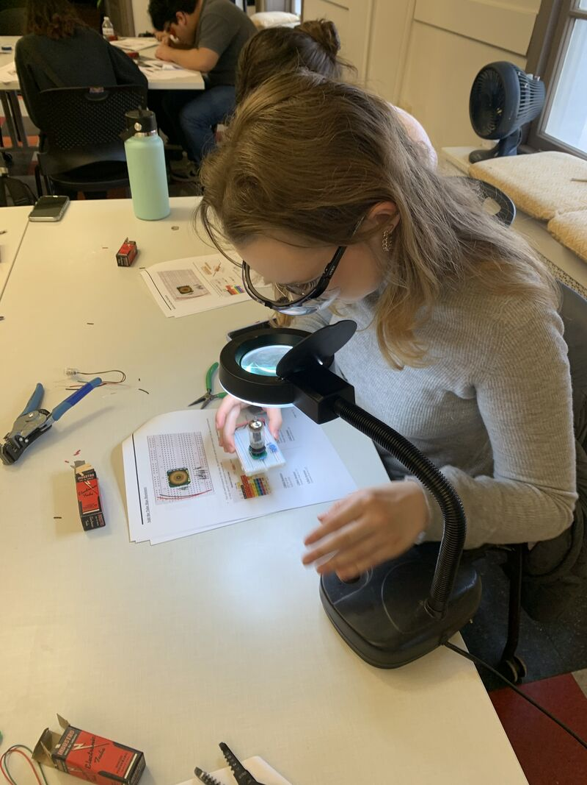
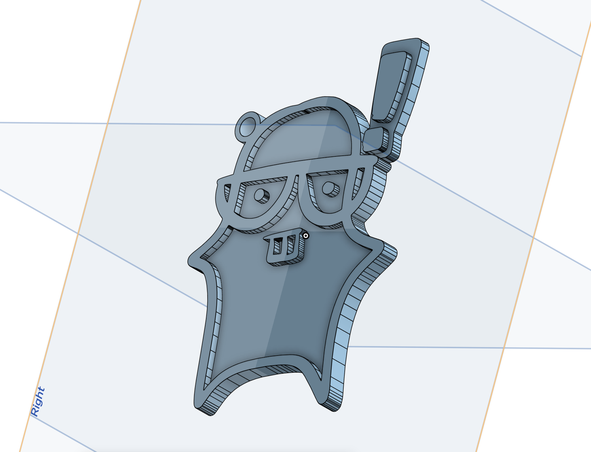
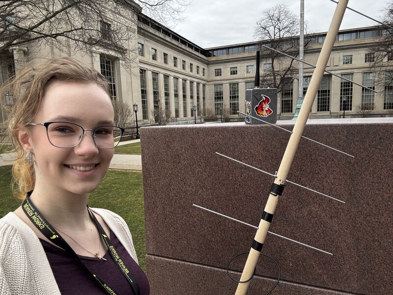
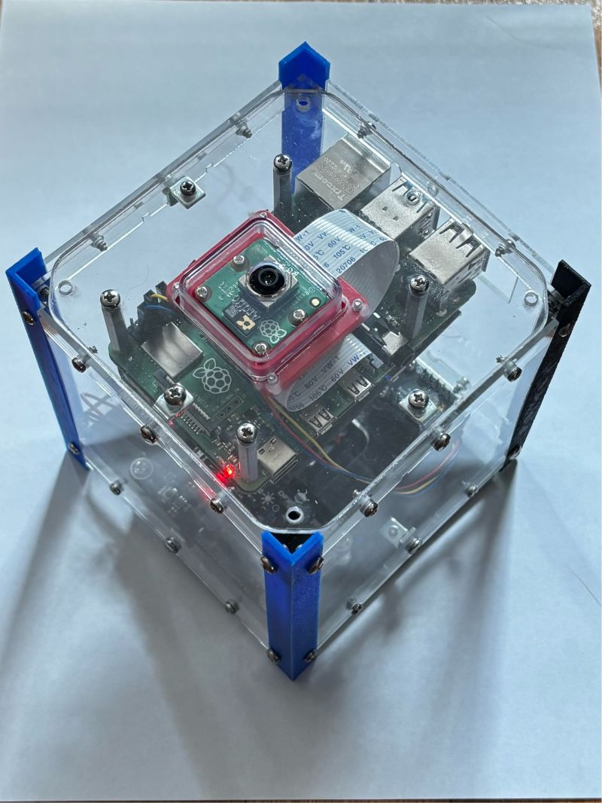
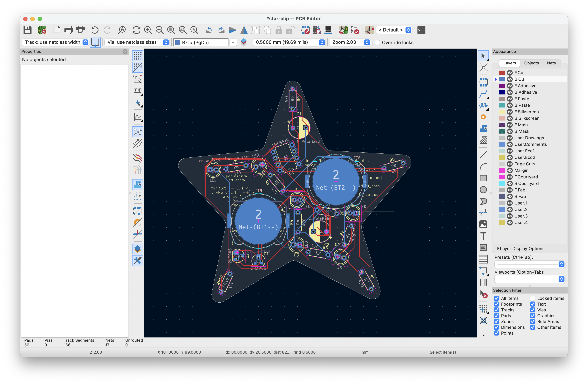
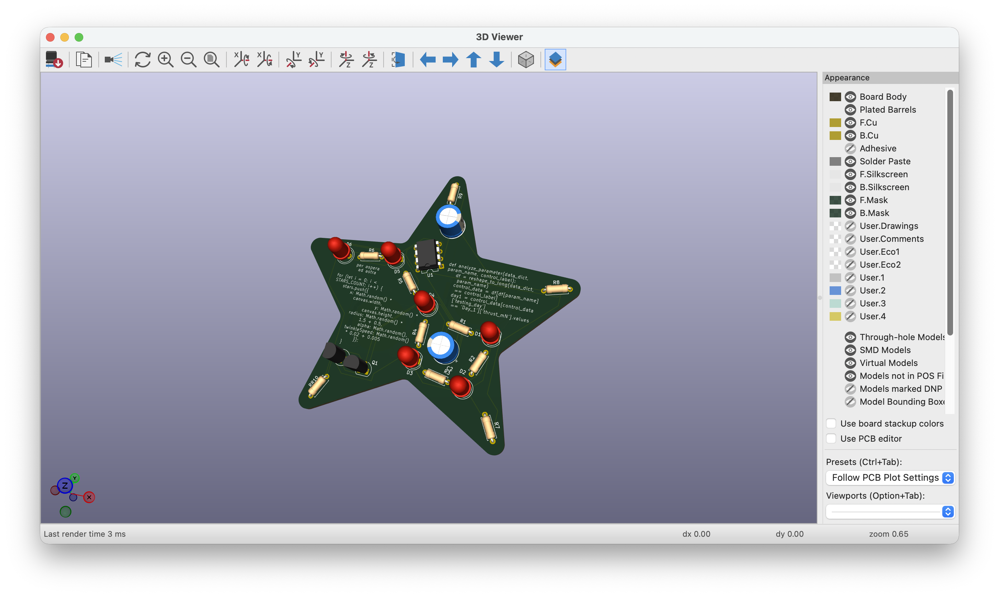
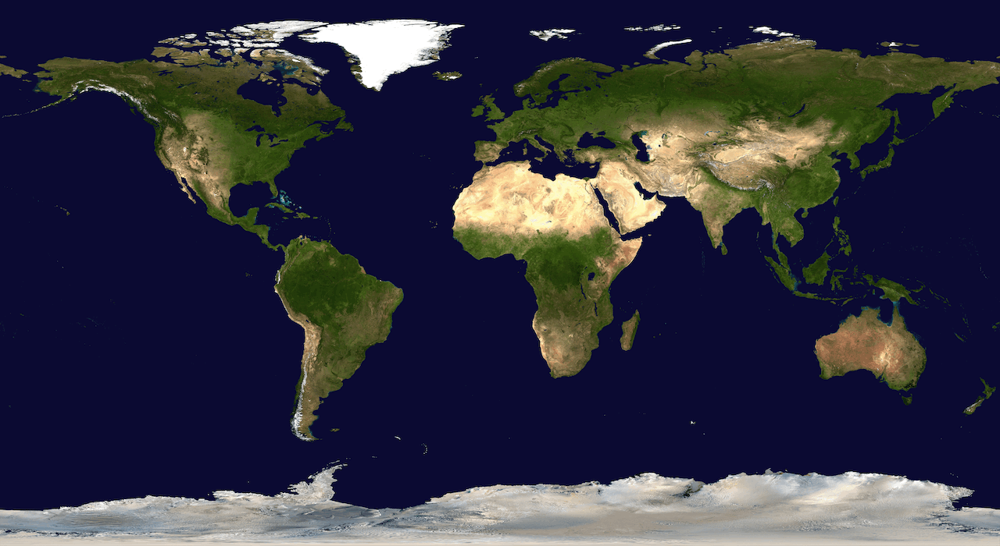
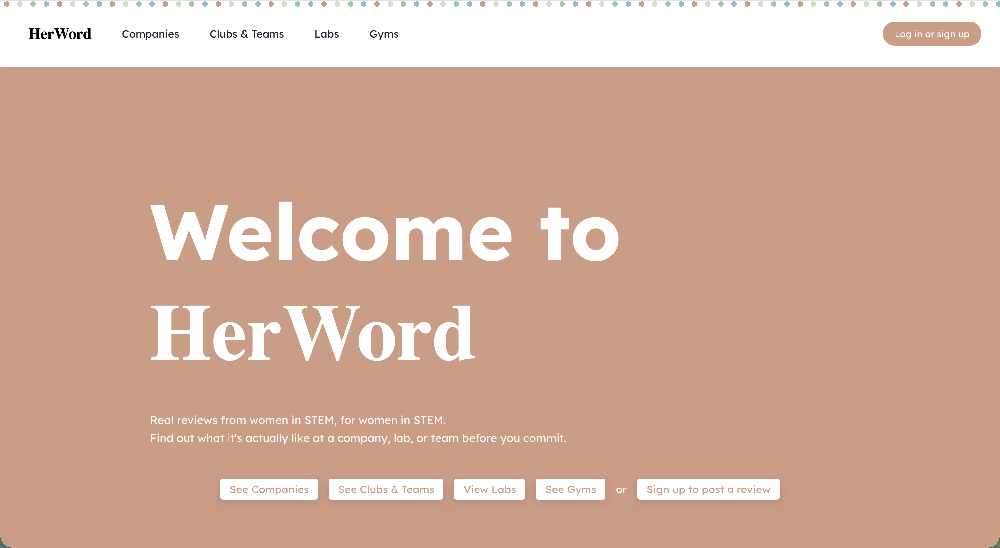
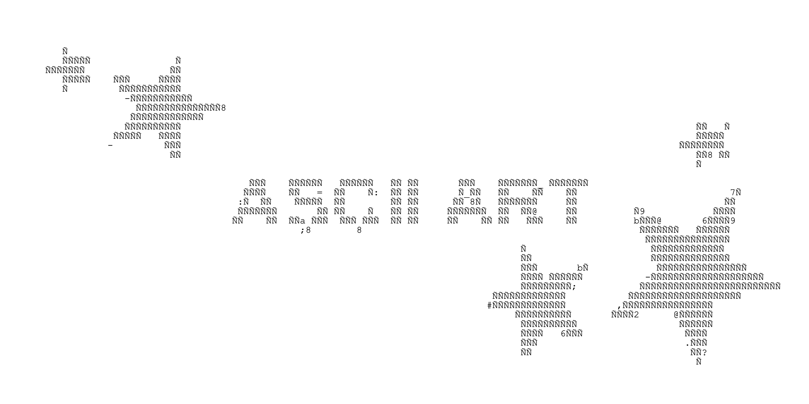
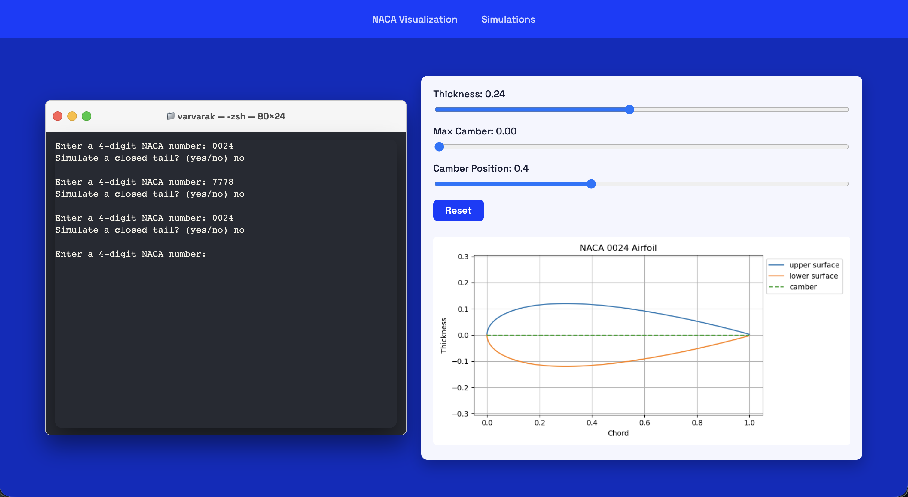

A Parametric Study on Annular Airfoil Geometry for Collector Electrodes in Electrohydrodynamic Propulsion Systems
This project investigates the effect of collector electrode geometry on the thrust of single-stage electrohydrodynamic (EHD) thrusters. EHD thrusters are silent and feature no moving parts, which makes them promising alternatives to small-scale drone propellers. However, their low thrust density remains a major hurdle. A significant contributor to this inefficiency is the aerodynamic drag generated by the collector electrode, which acts against the generated thrust. The thrust was measured using a customized low-friction force measurement setup. Different geometrical parameters of collector electrodes were tested, with a focus on the annular airfoil shape. The thruster was tested with a constant voltage of 8 kV, at a constant electrode gap of 25.4 mm. A negative correlation was observed between thrust and the thickness, camber and convergence angle of the annular airfoil. A net decrease in thrust of up to 32% was measured over the tested parameter ranges. These findings suggest that a slimmer airfoil shape improves aerodynamics and minimizing the collector's aerodynamic profile remains critical for maximizing EHD propulsion efficiency.
Read the paper →Electrohydrodynamic Plasma Thruster
Sep 2025 – May 2026
- Cooperatively designed a single-stage electrohydrodynamic propulsion system to assess the effects of alterations in annular airfoil collector electrode geometry on net thrust.
- Engineered and fabricated custom 3D-printed collector electrodes across multiple aerodynamic profiles.
- Built a real-time Arduino/MATLAB data acquisition (DAQ) system to safely capture live telemetry from 15 kV high-voltage trials.
- Applied regression and ANOVA statistical analysis in MATLAB/Python to quantify and validate the relationship between electrode geometry and net thrust.
- Recognized by MathWorks for outstanding use of MATLAB.
DOI: 10.31224/6625Oscillator
Constructed an oscillator for Morse code communication using a vacuum tube.
The oscillator's main speaker, vacuum tube, and lightbulb are housed in a custom 3D-printed Beaver Works logo shell.

3D Printed 'Lil Guy' Keychain
Designed in Onshape for the Hack Club Fusering program.
Made from a hand-drawn SVG of an original character.

Yagi Antenna
Built in cooperation with MIT Radio Society's Beaver Works Summer Institute (BWSI) Ham Radio Program.
Features hand-cut metal rods and soldered coaxial cable for optimal resonance.

1U Model CubeSat
Built as part of the BWSI Build A CubeSat Challenge (BACC).
Wrote a Python script that fetches data from an IMU to operate a PiCam3.
The RPi 5 analyzes captured images through image subtraction to assess the location and size of simulated lunar surface changes.

PCB Hairclip
Designed a star-shaped PCB in KiCad that features a 555 timer, two PNP transistors, and 6 LEDs that form a blinking constellation.


OpenCV Traffic Management System
Built an automated traffic system using OpenCV/ML for real-time vehicle detection and flow-rate analysis.
Programmed conditional logic for traffic light function in C++.
Claude Bell
Bell widget that rings when Claude is done with a prompt, linked to local Claude config files.
ISS Tracker
Keep track of where the International Space Station is and see information about its past and predicted trajectory and crew members onboard.

Squiggle
A VS Code extension that explains what an error means, why it could've happened, and how to fix it.
Find Squiggle on VS Code marketplaceHer Word
A web app for women in STEM to judge an environment's safety and welcoming atmosphere before joining.

ASCII Art Converter
A webpage that converts images into ASCII text art.

See it for yourselfAirfoil Sandbox
A website that allows users to visualize 4-digit NACA airfoils.

Experience
Frontend Software Engineer and Machine Learning Researcher
Frontend Software Engineering
Developed interactive tutorials that guided the user through a visually captivating introduction to the Mantis platform.
Machine Learning & Astronomy
Led and organized a team of engineers to analyze semantic representations of astronomical databases made with AI-assisted cognitive cartography.
Constructed data ingestion pipelines from astronomical databases to map continually updating semantic graphs of astronomical objects.
Algebra & Physics Tutor
Algebra Tutoring
Tutored 8th and 9th grade students in Algebra I and II curricula.
AP Physics 1 Tutoring
Tutored peers on AP Physics 1 curricula.
Skills
Languages
Python
MATLAB
C++
TypeScript
JavaScript
HTML/CSS
C
SQL
Tools
ANSYS
Onshape
KiCad